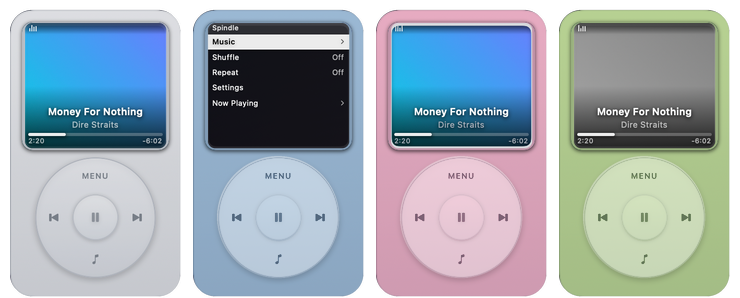

Spindle.
A macOS desktop widget shaped like a 2000s-era portable music player. It shows whatever is playing, from any app — the album cover filling the screen, the title laid over it, and a working scroll wheel.
- Platform
- macOS 14 or later
- Runs on
- Apple silicon & Intel
- Version
- 2.5.0
- Built with
- Swift
- License
- MIT

What it does
Now playing, from anything.
Any app, not just Music
It reads what is playing from the system media controls, so Music, Spotify, Safari, Chrome, IINA and VLC all show up — artwork included.
A click wheel that works
Turn it to change the volume or move through the menu; the centre plays and pauses. Every step ticks — the sound is synthesised, not sampled.
Lives on your desktop
Not a WidgetKit widget: a borderless panel pinned to the wallpaper behind your windows, sized to the macOS widget grid, on every Space.
Your library, browsable
Playlists, Artists, Albums and Songs from Apple Music — or from Spotify through its Web API, signed in with PKCE and kept in your keychain.
Nine skins
Including Liquid Glass and Frosted Glass, plus one you colour yourself with a hue wheel and sliders for opacity, borders and blur.
Asks for very little
No Screen Recording, Accessibility or Full Disk Access. It only goes online to talk to Spotify — and only if you connect it.
Controls
The wheel, faithfully.
Drag around the ring or simply scroll anywhere on the widget. Nothing is wheel-only: the screen is a control too, the volume bar can be dragged, and the scrubber seeks. The player at the top of this page works the same way — try it.
-
1
Scroll anywhere, or turn the wheel
Now playing: Volume · In a menu: Moves the highlight
-
2
Centre button
Now playing: Play / pause · In a menu: Select
-
3
MENU
Now playing: Opens the menu · In a menu: Back up one level
-
4
Right / left of the wheel
Now playing: Next / previous track · In a menu: Next / previous track
-
5
Bottom of the wheel
Now playing: Opens the player you pick · In a menu: Same
-
6
Click the screen
Now playing: Opens the menu · In a menu: Selects that row
-
7
Drag the scrubber
Now playing: Jumps to that point
Under the hood
How it reads now playing.
Since macOS 15.4, the private MediaRemote framework returns an empty dictionary to any process that isn't an Apple platform binary — an ordinary app can no longer simply ask what's playing.
Spindle ships a small library and loads it inside /usr/bin/perl, which is a platform binary, using the technique from ungive/mediaremote-adapter. It subscribes to MediaRemote's change notifications and streams JSON back to the app — push-based and deduplicated, so idle playback costs nothing.
The elapsed time it reports is a reading taken at a timestamp, not a live value, so the scrubber extrapolates from the timestamp instead of trusting the number. If a future macOS closes this route, Spindle falls back to AppleScript for Music and Spotify.
Tested on macOS 15.4+
Get Spindle.
Free and open source · macOS 14 or later · Apple silicon & Intel
First launch
Spindle isn't signed with a paid Apple Developer ID, so macOS blocks it the first time. Open System Settings → Privacy & Security, click Open Anyway, and confirm. You only do this once. Or in Terminal:
xattr -dr com.apple.quarantine "/Applications/Spindle.app"
Spindle is an independent project and is not affiliated with, endorsed by, or connected to Apple Inc. All artwork is original; product names belong to their respective owners.